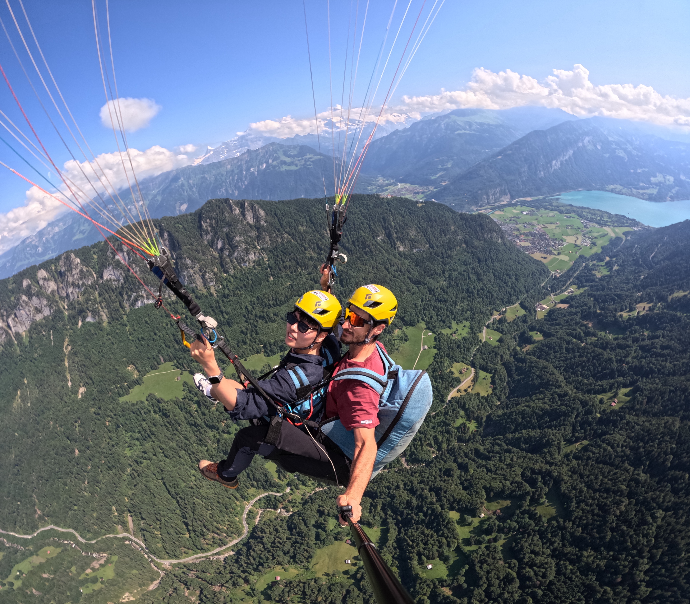
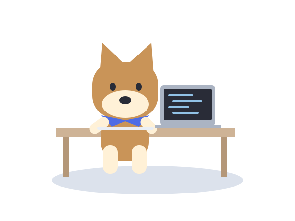

비전·3D 모션
사전학습 모델을 연결해 인물·공을 추적하고, 3D 모션과 터치 구간 지표를 계산합니다.

박지우 AI / ML Developer

컴퓨터 비전과 3D 동작 분석을 연구하는 AIV Lab 학부연구생 박지우입니다. 영상 속 움직임을 데이터로 해석하고, AI를 실제로 쓸 수 있는 기능으로 만드는 데 관심이 있습니다.
코드가 왜 이렇게 동작하는지, 이 문제에 왜 이 설계가 필요한지 생각하며 개발합니다. 예상과 다른 결과가 나오면 입력 데이터와 처리 과정을 나눠 살펴보고, 실험과 로그로 원인을 확인합니다.
컴퓨터 비전·의료 AI 연구와 축제 서비스 개발을 거치며, 연구에서는 결과의 근거를, 서비스에서는 사용자가 겪을 상황을 살피는 법을 배웠습니다. 선택한 방법을 설명할 수 있고, 팀과 함께 더 나은 답을 찾아가는 AI 엔지니어가 되고자 합니다.
영상 분석과 서비스 개발에 직접 적용한 기술입니다.
사전학습 모델을 연결해 인물·공을 추적하고, 3D 모션과 터치 구간 지표를 계산합니다.
MCP로 조회한 문서를 모델 입력에 전달하고, 출력 예산·응답 흐름을 실험합니다. 영상 모델의 입력과 결과도 같은 조건으로 비교합니다.
동시 예매와 인증 예외 처리를 구현하고, 관리자 설정·가입 화면을 연결합니다. 번역 실패 시 원문 제공과 후속 보정도 처리합니다.
팀 소통 · 이슈별 작업 관리 · PR 기반 변경 공유
직접 만들고, 실험하고, 운영했습니다.
영상의 움직임을 3D로 복원하고,
인물과 시간의 연결을 검수합니다.
 연구과제
연구과제


총학생회와 함께 운영한 대학 축제 서비스. 예매·인증·번역 백엔드를 담당했습니다.
 Face Sign 연계 입장
Face Sign 연계 입장선수와 공을 추적하고, 드리블 동작을 검수 가능한 지표로.
근거 조회부터,
완결된 답변까지.
루닛 L2-preview의 의료 답변을 개선하며, MCP 근거 전달과 출력 예산을 실험했습니다.
호기심이 이어진 곳들.

넙치를 찾고, 개체별 외형 증상을 분류하는 앱.
함께 만든 성과, 꾸준히 쌓아온 배움.
함께 만들고 싶은 것이 있다면,
편하게 이야기해요.
AI 연구와 서비스 개발,
그리고 함께할 기회에 관해.